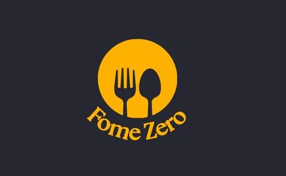

Relatório Superstore
Projeto desenvolvido como aluna de Análise de Dados, com foco em resolver problemas de negócio utilizando dados reais de uma rede de papelaria.
O projeto aborda retenção de clientes (Cohort Analysis), segmentação RFM e desempenho de produtos e lojas, transformando dados em insights estratégicos para tomada de decisão. Projeto desenvolvido em Excel.
Dashboard da Tudo Aqui
Dashboard desenvolvido em Power BI, Este projeto foi desenvolvido com o objetivo de apoiar a tomada de decisão estratégica da empresa Tudo Aqui, que planeja expandir suas operações para o ramo de locação de acomodações, utilizando como base dados do Airbnb da cidade de New York, no período de 2011 a 2019.
Análise Criativa e Empresarial
Projeto acadêmico focado na criação de uma startup digital fictícia, envolvendo definição do modelo de negócio, estratégias de crescimento, métricas de desempenho (AARRR) e planejamento do ciclo de vida do cliente, com foco em viabilidade e escalabilidade.
Desenvolvido no Canvas.
Relatório Aroma Café
Projeto acadêmico de análise de dados aplicado a uma rede de cafeterias, com foco na avaliação da saúde do negócio, identificação de causas de variação nas vendas, previsão de faturamento e recomendações estratégicas para crescimento e melhoria da performance. Com as quatro análises (descritiva, diagnóstica, preditiva e prescritiva) aplicadas ao crescimento da rede de cafeterias Aroma Café, utilizando regressão linear.
Desenvolvido no Google Sheets e Canvas.

Dashboard em Python
Este projeto foi desenvolvido a partir de um desafio de Ciência de Dados, no qual o objetivo é auxiliar o CEO da empresa fictícia Fome Zero, um marketplace de restaurantes, a entender melhor o negócio através da análise de dados.